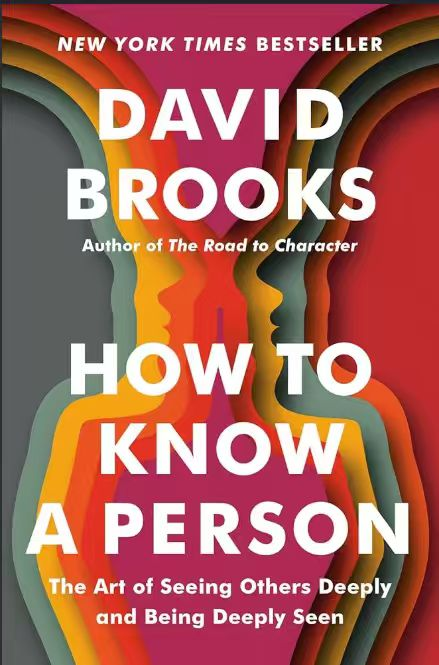

DAVID BROOKS
How to Know a Person
拆书 · 6 天
How to Know a Person
David Brooks · 2023
拆书 · 6 天
How to Know a Person
David Brooks · 2023作者简介
 David Brooks《纽约时报》专栏作家
David Brooks《纽约时报》专栏作家
长期书写人与社会、品格与人际关系，著有《品格之路》《第二座山》。这本书是他对「怎样真正认识一个人」的一次系统梳理。
内容简介
我们都渴望被真正看见，却很少有人学过怎么去看见别人。作者把「认识一个人」拆成可以练习的能力：怎样提问，怎样倾听，怎样陪一个处在低谷的人，怎样读懂一个人背后的故事。
书里有一组对照：让人觉得被照亮的 illuminator（照亮者），和让人觉得自己很渺小的 diminisher（削弱者）。
这本书回答的问题
- {{q.n}}{{q.text}}
适合谁读
总觉得聊天停在表面的人 刚进大学、想交到更深朋友的人 想学会倾听的人优质语段精选
6 天
DAY{{d.n}}
{{d.en}}{{d.zh}}
{{d.unlock}}
全书思维导图
查看完整导图 ›关键表达词库
全部 24 个 ›
{{p.en}}
{{p.zh}}
拆书播客
6 期
{{e.title}}第 {{e.n}} 期 · {{e.dur}}
{{e.unlock}}